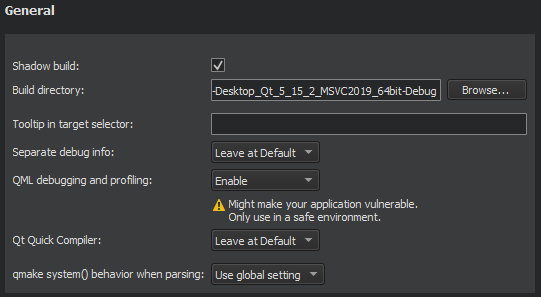
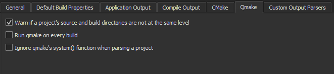
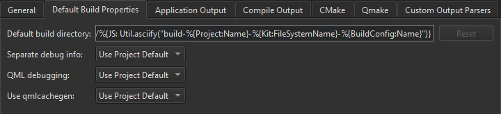

qmake Build Configuration

By default, Qt Creator builds qmake projects in a separate directory from the source directory, as shadow builds. This keeps the files generated for each build and run kit separate. If you only build and run with a single kit, you can deselect the Shadow build checkbox. Select the build directory in the Build Directory field.
To make in-source builds the default option for all projects, select Tools > Options > Build & Run > Default Build Properties, and enter a period (.) in the Default build directory field.
In the Tooltip in target selector field, you can enter text that is displayed as a tooltip when you hover the mouse over the build configuration in the kit selector.
You can create separate versions of project files to keep platform-dependent code separate. You can use qmake scopes to select the file to process depending on which platform qmake is run on.
If debug info is being generated, you can have it placed into separate files, rather than embedded into the binary, by selecting Enable in the Separate debug info field. For more information, see Using the Performance Analyzer. To use default settings, select Leave at Default.
In the qmake system() behavior when parsing field, you can select whether processes are run via qmake's system() function or ignored. Setting this option to Ignore might help if opening or closing projects takes too long, but it might produce inexact parsing results.
Global qmake Settings
To specify settings for all qmake builds, select Tools > Options > Build & Run > Qmake.

To set the default build properties, select Tools > Options > Build & Run > Default Build Properties.

Compiling QML
You can compile QML source code into the final binary to improve the startup time of the application and eliminate the need to deploy QML files together with the application. For more information, see Ahead-of-Time Compilation.
Qt Creator project wizard templates create Qt Quick projects that can be compiled because they are set up to use the Qt Resource System. To compile QML code, select Enable in the Qt Quick Compiler field. To use default settings, select Leave at Default.
You can specify default behavior for compiling QML code in Tools > Options > Build & Run > Qmake > Use qmlcachegen.
qmake Build Steps
Qt Creator builds qmake projects by running the make or nmake command from the Qt version defined for the current build configuration.

To override the shell command that Qt Creator constructs by default, disable or remove the build step and add a custom build step that specifies another shell command.
By default, Qt Creator uses all the CPU cores available to achieve maximum build parallelization. On Linux and macOS, you can specify the number of parallel jobs to use for building in the Parallel jobs field. Select the Override MAKEFLAGS check box to override existing MAKEFLAGS variables.
Select Disable in subdirectories to execute the build step only for a top-level build.
Select Add Build Step > IncrediBuild for Linux or IncrediBuild for Windows to accelerate builds by using IncrediBuild.
Select Add Build Step > Run Conan Install to use the Conan package manager with qmake